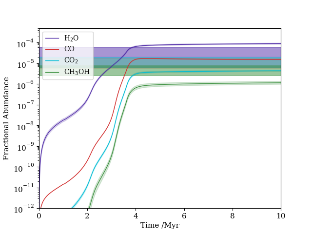

UCLCHEM
Most of my work centres around chemical modelling and use of my chemical code UCLCHEM. This is a code written in Modern Fortran based on the original code by Serena Viti with contributions from manor authors.
UCLCHEM is very much an all purpose chemical solver and was developed to model clouds, shocks and hot cores; it is easily extendible to other applications. I'm happy to work with anyone who wants to use the code otherwise it is freely available on Github.
